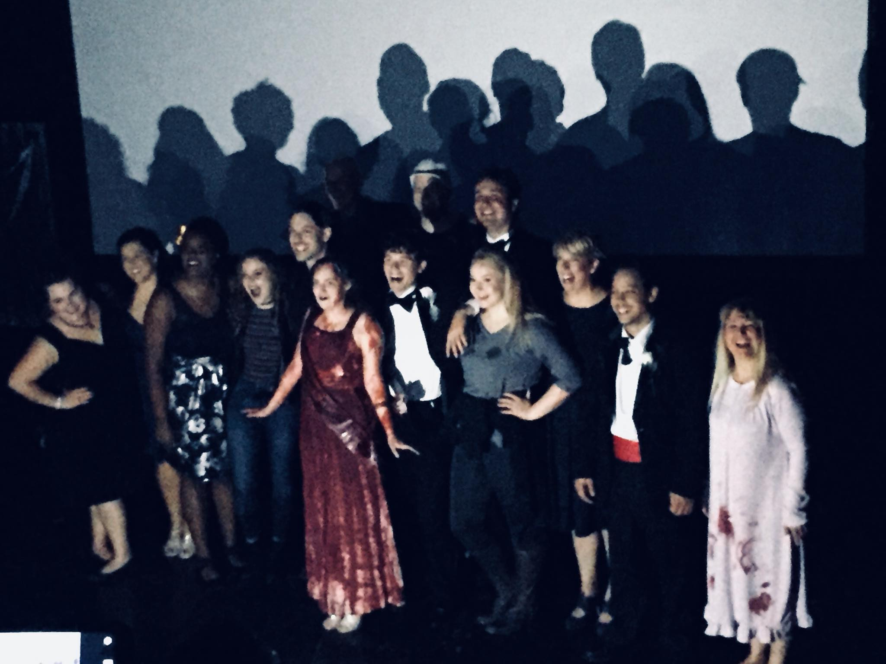
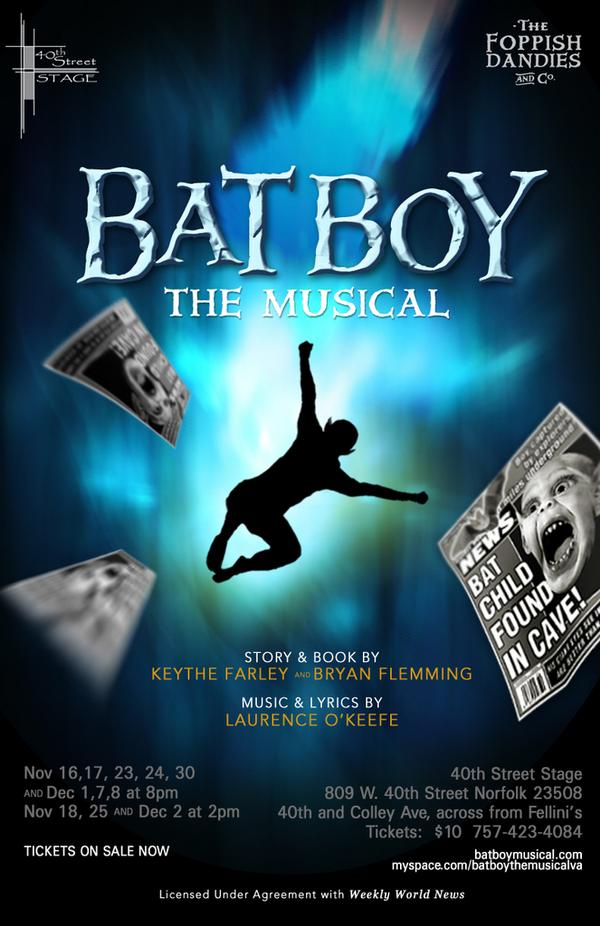
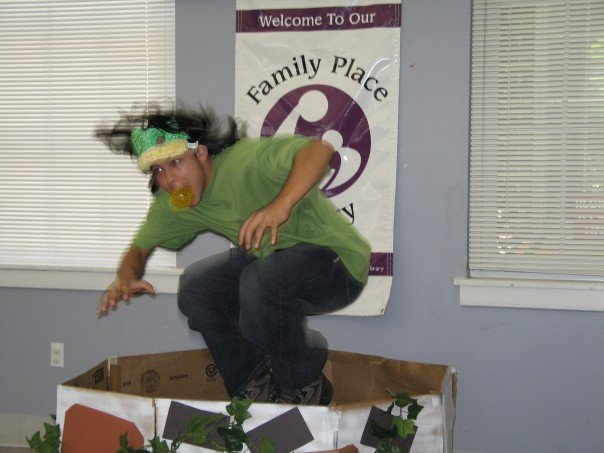
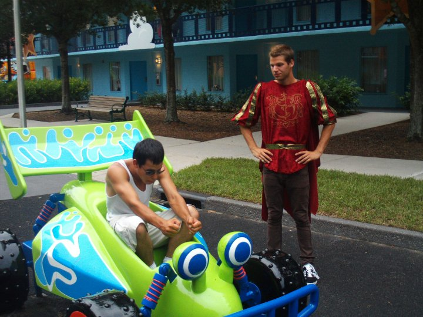

- Listening to Music
- Playing Music
- Writing Music
- Singing
My music tastes span the entire spectrum. I have listened to Pavoratti belt "Ava Maria" followed immediately by "Disturbed with Down With the Sickness".
I play guitar and piano, though I cannot say I am by any means an expert, but I get by.
I have written more one liners than I can count, and few half measures, but none of them are fully complete without the ability to adequately put music to words.
Singing is by far one of my favorite things to do when it comes to music, unfortunately time is in short supply, and karaoke nights are few and far between. I won't claim to be good, instead I will let you decide for yourselves.
Click here or see below.Reading is a great way to escape. It allows me to let my mind wander and to travel across time, dimensions, worlds, even universes. There are so many genres out there it's hard to pick just one, but I believe the ones that pull you fully and completely into their worlds are the best.
Writing is a great way to express oneself. It allows me yet another way to escape and put my thoughts and feelings into words, and to share them with others. I have written many things, from short stories, to poems, to songs (as I mentioned earlier), to novels, well that one is still in progress. Recently, a short story of mine was chosen as part of an anthology, I cannot state with whom as of yet as it has yet to be announced.
Visit Allpoetry to check out some of my poetry.
I have always enjoyed entertaining people in one capacity or another, whether it be just entertaining friends in my home for a dinner party, on a stage or otherwise, such a thing has always brought me joy.
- Theatre
- Acting
- 2018 Carrie: The Musical - Lawrence D. Cohen
- 2018 We Will Rock You: The Musical - Ben Elton
- 2011 The Scene - Theresa Rebeck
- 2009 The Doctor in Spite of Himself - Moliere
- 2008 Dr. Caligari - Philip Odango
- 2007 BatBoy: The Musical - Keythe Farley & Bryan Flemming with Laurence O'Keefe
- Volunteer Show at the Public Library
- Directing
- Voice Acting
- Just being goofy
I have performed in a number of different plays since high school. Of course, with such an expanse of time it's hard to recall them all.
Here are a few highlights:
I played George a character in the ensemble of this musical.

I was in the ensemble of this musical. I also was a face for the marketing materials for the show.


I played Lewis in this four person play.


I played Leandre in this play with Tidewater Community College.

This play was written and directed by Philip Odango, based on a 1920 film of the same name. I played three separate characters in this play that were defined by their personas not a name. A defiant little brother, a timid doctor's assistant, and a psychotic killer.


I played in the ensemble of this musical.

I performed as Frog in a volunteer show at the Library in the area.
In this image I am jumping out of improvised well.

I have done very little in the way of directing, however, the joy of seeing a vision brought to life is beyond words. I have directed a small One Act play in high school and a few musical endeavors.
I have an extreme interest in the world of voice acting, unfortunately I am very much a novice in the field and have yet to get very far.
Here is a small sample of my work:
Having people around that you can just be goofy with is also a good time.
